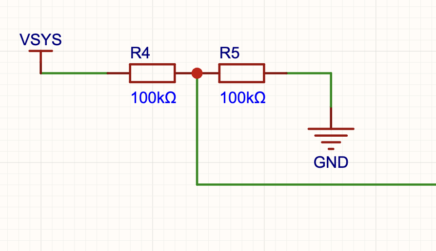
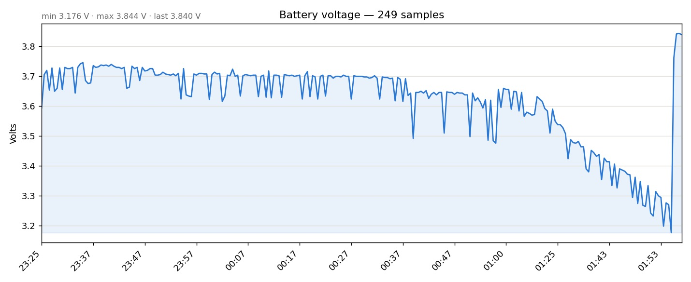
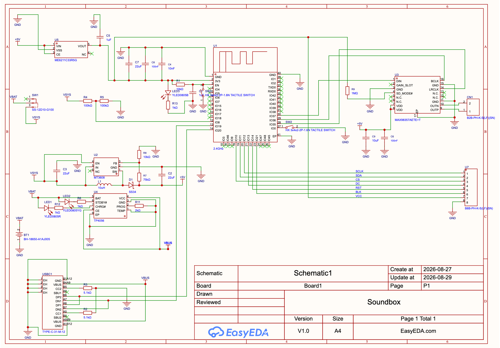
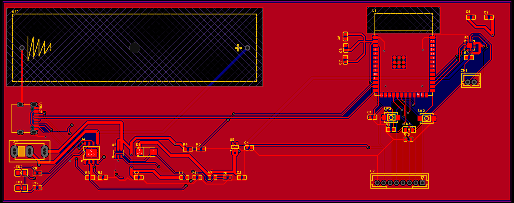
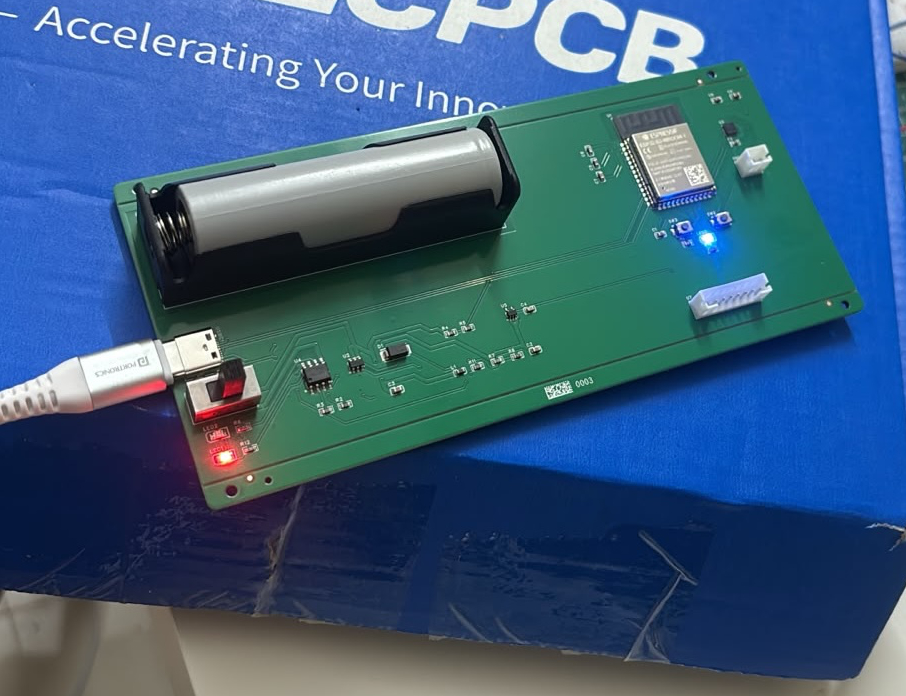

Soundbox - Internals
Complete guide for understanding payment devices from hardware to software
Descend with me into a deep rabbit hole - one that had me emailing sketchy Chinese hardware suppliers, learning Soviet-era telephone compression, and losing countless hours of sleep and money.

It Speaks !
We have all heard and seen sound-boxes, they are ubiquitous at this point. I've seen them in countless stores and even with street vendors selling vegetables. They an incredibility clever and simple piece of machinery allowing merchants to have a clear audio confirmation about the payment.
At the heart of this system are voices, whenever a soundbox receives a payment notification, it makes an announcement such as -
512 Rupees received
When the amount is received, it is broken up into individual clips and played in sequence, for example
Example of kind of message received by a soundbox
transaction_id = 123456 amount = 512 language = "english"
Machine plays in order following clips
play: 5.mp3 play: hundred.mp3 play: 12.mp3 play: Rupees_Received.mp3
Depending upon the language the amount is broken up into speak-able chunks and played in order. Here is a simple algorithm for the same.
Show Code
// looks up clip via name and play it till completion
extern void play_clip(const char* clip_name);
// speaks a number <= 20
void speak_num(int n) {
char name[8];
snprintf(name, sizeof(name), "%d.mp3", n);
play_clip(vp, sink, name);
}
// speaks a number <= 99
void speak_2num(int n) {
if (n <= 20) {
speak_num(n);
} else {
speak_num((n / 10) * 10);
if (n % 10) speak_num(n % 10);
}
}
void speak(int number) {
if (number == 0) {
play_clip("0.mp3");
} else {
int crores = number / 10000000;
int lakhs = (number / 100000) % 100;
int thousands = (number / 1000) % 100;
int rest = number % 1000;
if (crores) {
speak_2num(crores);
play_clip("crores.mp3");
}
if (lakhs) {
speak_2num(lakhs);
play_clip("lakhs.mp3");
}
if (thousands) {
speak_2num(thousands);
play_clip("thousand.mp3");
}
if (rest) {
if (rest / 100) {
speak_2num(rest / 100);
play_clip("hundred.mp3");
}
if (rest % 100) speak_2num(rest % 100);
}
}
play_clip("rupees_received.mp3");
}
Next piece of the puzzle is actual looking up of clips. Since these devices are memory and storage constraint having an actual file system or a general purpose database will consume too much space. Instead, they pack all clips into a single file called a "Voice Pack" which is stored in flash memory and memory mapped for efficient reading.
Structure of voice pack
[ header: magic, version, clip_count ]
[ index: array of { name[16], offset, length, frame_count, sample_rate } ]
[ blob: clip0 bytes | clip1 bytes | clip2 bytes | ... ]
The primary idea behind voice packs is that we store a big list of clip names with offsets to the actual clip data. When finding a desired clip, we can quickly jump to its offset and play it.
Raw PCM bytes are stored so we don't have to unpack the clip - which could introduce a delay in announcements.
Another benefit of voice packs are that they can be independently updated and swapped for a different voice or language.
I'm not going into details of voice pack generation and loading because it's rather straight forward binary file format.
Less is More
After generating the voice pack and a some simple code to test everything, it worked great, the voices were crisp, it felt like real soundbox announcement system.
Except, of course the size it was around 1 MB which would be too much if you ever plan to store multiple language for your soundbox. It was clear to me i needed to compress it somehow and decode it in real time before playing.
Soundboxes are small low power computing devices with weak CPUs and very low memory, this limits my choice for compression algorithm considerably.
Fortunately for me early telecom operators faced similar problems and then they invented Adaptive Differential Pulse-Code Modulation or ADPCM.
ADPCM
The reason for choosing ADPCM as oppose to a general purpose compression algorithm is that we can leverage domain knowledge for compression, for audio we don't need all the information for a sample of audio to be understandable.
The differential part: imagine a voice clip or sample to be series of number which represent a an amplitude wave. You can logically imagine that for any human speech values might not be that different in magnitude. Storing only differences can save up a lot of space
Original: 1000, 1010, 1020, 1015, 1030 We store: 1000, +10, +10, -5, +15
The adaptive part: it refers to adaptive quantisation, a rapidly changing speech we would need to encode larger values and for small changes we would need encode smaller values. Essentially we would need a to vary "step_size" which refers to a quantisation size ie. what the values stored represent or how do we scale them.
Original : [1000, 1010, 1020, 1015, 1030] Codes : [1, 2, -1, 6] Decoded : [1000, 1010, 1020.0, 1015.0, 1030.0]
Show code
samples = [1000, 1010, 1020, 1015, 1030]
def clamp(n, a, b):
return max(a, min(n, b))
def encode(input_samples):
predictor = input_samples[0]
step_size = 10
output_codes = []
for sample in input_samples[1:]:
diff = sample - predictor
code = round(diff / step_size)
code = clamp(code, -8, +7)
quantized_difference = code * step_size
predictor += quantized_difference
output_codes.append(code)
if abs(code) >= 6:
step_size *= 2
elif abs(code) <= 1:
step_size /= 2
return input_samples[0], step_size, output_codes
def decode(initial_predictor, initial_step_size, input_codes):
predictor = initial_predictor
step_size = initial_step_size
output_samples = [predictor]
for code in input_codes:
predictor += code * step_size
output_samples.append(predictor)
if abs(code) >= 6:
step_size *= 2
elif abs(code) <= 1:
step_size /= 2
return output_samples
initial_predictor = samples[0]
initial_step_size = 10
codes = encode(samples)[2]
print("Original :", samples)
print("Codes :", codes)
print("Decoded :", decode(initial_predictor, initial_step_size, codes))
Firmware
Here comes the actual hardware programming, I started with ESP32 primarily because its documentation is widely available and it is designed for hobbyists to tinker with.
ESP32 is programmed with Espressif IoT Development Framework or IDF (not to be confused with Israeli Defense Forces) which comes with a c/c++ cross compiler bunch of libraries to be used with ESP32 such FreeRTOS, which we will be using as a base for my soundbox firmware.
I started with porting my ADPCM and voicepack decoding code into the firm ware and wired up an MAX98357A Amplifier with a small speaker.
MAX98357A is a two is one device firstly it is a DAC (digital to analog convertor) which receives our digital audio sample values and converts them into a continuous wave form and then it amplifies it using external power source to drive a speaker.
It has an I²S peripheral to communicate with the host MCU in our case ESP32, which is designed to send and receive a stream of digital values such as audio samples.
Demo
I have not include any code for firmware because it is mostly just boilerplate setup for what we have already discussed.
Connecting it to internet - MQTT
Most important component of any soundbox specially from the perspective of payment processors is its ability to connect to the internet which enables it to actually receive real time payment notifications.
Soundboxes use MQTT protocol for this purpose, it is a purpose-built protocol for communication between IOT devices and servers.
It uses 3 main components for its operations
- Subscribers (IOT devices)
- Publishers (Payment service)
- MQTT broker
MQTT broker acts as a message broker between the subscribers and publishers which allows this system to scale to millions of devices.
Topics
Similar to other message brokers, subscribers and publishers send and receive messages on dedicated channels called topics. These topics are hierarchical like a file path which allows subscribes and publishers to receive and send message to any level in the tree
Consider following topics
/soundbox/< device-id >/status /soundbox/< device-id >/play /soundbox/< device-id >/telemetry
My soundbox pushes its online status on /soundbox/< device-id >/status which is received
by my soundbox-health service, it is subscribed to /soundbox/# here # means a wildcard topics. This allows my health service to listen to all the device's status
Similarly my device listened to only /soundbox/< device-id >/play topic which is a dedicated topic for receiving payment notification. (see section 1 for how notifications are announced).
Battery sensing
For production soundboxes it is quite important to measure its battery specially for going into deep sleep and preserving battery life when not in sleep
The ESP32 has a built-in 12-bit ADC, which is what we need to read the scaled-down battery voltage.

The voltage divider circuit shown above allows the ESP32 to measure the battery voltage accurately. Since the ESP32's ADC can only measure up to 3.3V, we use resistors to scale down the actual battery voltage (typically 3.7V to 4.2V for LiPo batteries) to a safe range. The measured voltage is then sampled periodically and used to estimate battery capacity.

The graph shows a typical discharge curve of a LiPo battery over time.s
Sleeping...
Once you have battery sensing in place, the next logical step is to put your device into deep sleep when it's not actively listening for payments. The ESP32 has multiple sleep modes - light sleep, modem sleep, and deep sleep - each consuming progressively less power.
For soundboxes, deep sleep is perfect because they don't need to maintain WiFi connection constantly. The device wakes up only when it receives an MQTT message or when the user physically activates it. Combined with battery sensing, this can extend battery life from days to weeks.
Making it for Real

After months of breadboard prototyping and debugging on the bench, it was time to commit to actual PCB design. The schematic captures all the key components: the ESP32, the MAX98357A amplifier, the battery charging circuit.

The PCB layout was a lengthy and complicated process and quite literally took the most amount of time (yet it has the shortest section in this article). After designing i used JLCPCB's PCB assembly service to get my PCB made, the process was quite seamless and somewhat affordable (with my salary atleast).
It's Real

The moment the manufactured PCBs arrived from the fab house was surreal. After countless late-night design sessions, holding the actual board in your hands gives another level of satisfaction.
Cellular networks
I will be covering cellular on its own article, it's not fundamentally different but communicating to modem (and even finding a proper cellular modem) is its own challenge.